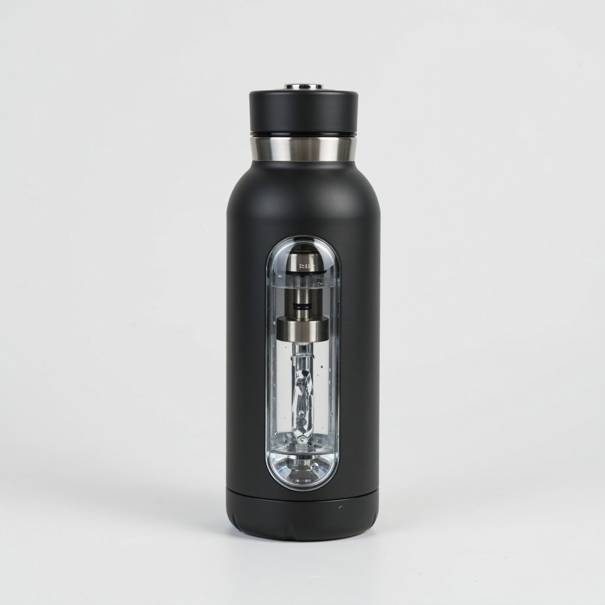
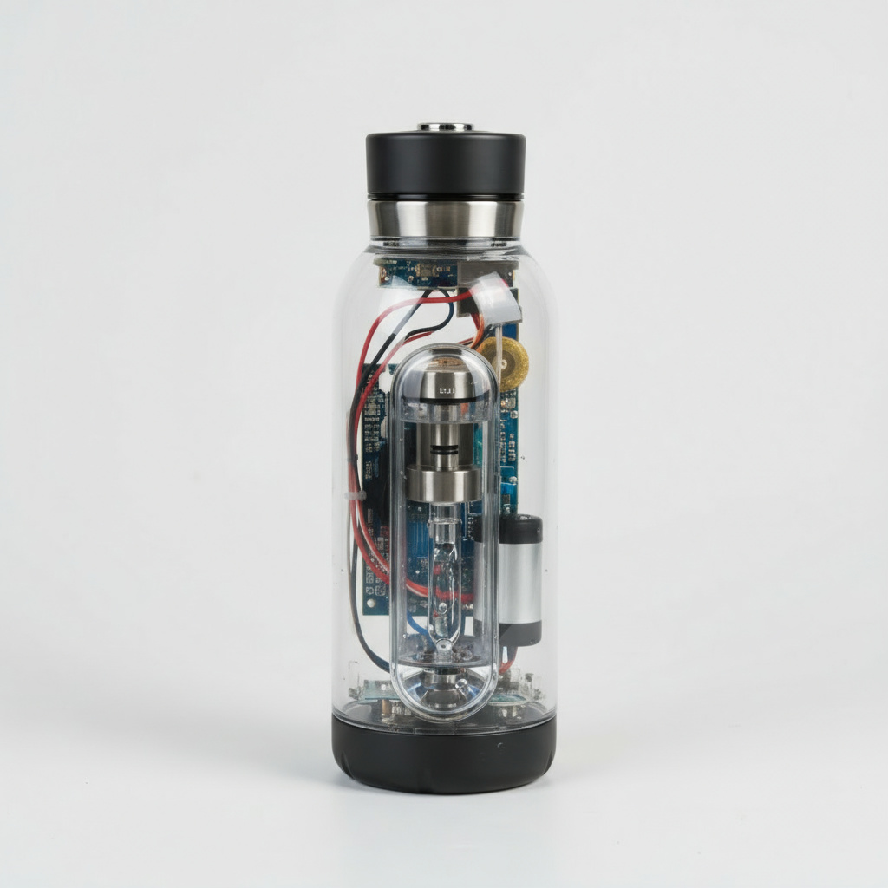

Water4Ever, salvando seu tempo e o mundo
O mais novo lançamento da Water4Ever é a garrafa auto-sustentável, uma garrafa térmica junto de um gerador de água, que ao detectar espaço sobrando na garrafa, a enche automaticamente, salvando seu tempo que normalmente gastaria enchendo-a e economizando a água natural do planeta.
Especificações Técnicas
| Características | Detalhe |
|---|---|
| 🔩À prova d'água | Embora haja circuitos na garrafa, todos são à prova d'água, por isso ão há necessidade de se preocupar com a segurança. |
| 📅 Garantia de 4 anos | Devido à nossa confiança, a garrafa vem com uma garantia de 4 anos garantindo reembolso total. |
| 🎨 Variedade de cores | A garrafa possui 5 variações de cores: preta, branca, azul, vermelha e roxa. |
| 🔋 72 horas de bateria | Carregada com um carregador incluso com o produto. |
|  | |